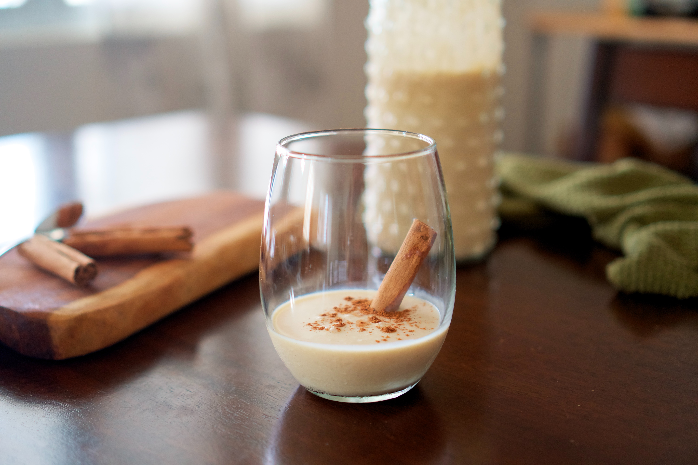

Coquito Recipe

Coquito ready to drink.
Ingredients
- Evaporated Milk
- Eggs
- Cream of Coconut
- Sweetened condensed milk
- White rum
- Water
- Vanilla
- Spices
Steps
- Cook the evaporated milk and egg yolks in a double boiler until thick.
- Transfer the mixture to a blender and blend with the remaining ingredients.
- Transfer to glass bottles and refrigerator until cold.